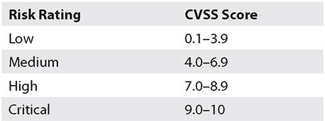

Table of Contents for
CompTIA Security+ All-in-One Exam Guide, Sixth Edition (Exam SY0-601)), 6th Edition
- Cover (01:09 mins)
- Title Page (01:09 mins)
- Copyright Page (03:27 mins)
- Dedication (01:09 mins)
- About the Authors (04:36 mins)
- Contents (19:33 mins)
- Preface (02:18 mins)
- Acknowledgments (01:09 mins)
- Introduction (12:39 mins)
-
Part I Threats, Attacks, and Vulnerabilities (01:09 mins)
- Chapter 1 Social Engineering Techniques (35:39 mins)
- Chapter 2 Type of Attack Indicators (37:57 mins)
- Chapter 3 Application Attack Indicators (33:21 mins)
- Chapter 4 Network Attack Indicators (39:06 mins)
- Chapter 5 Threat Actors, Vectors, and Intelligence Sources (44:51 mins)
- Chapter 6 Vulnerabilities (31:03 mins)
- Chapter 7 Security Assessments (23:00 mins)
- Chapter 8 Penetration Testing (25:18 mins)
-
Part II Architecture and Design (01:09 mins)
- Chapter 9 Enterprise Security Architecture (26:27 mins)
- Chapter 10 Virtualization and Cloud Security (25:18 mins)
- Chapter 11 Secure Application Development, Deployment, and Automation Concepts (27:36 mins)
- Chapter 12 Authentication and Authorization (33:21 mins)
- Chapter 13 Cybersecurity Resilience (39:06 mins)
- Chapter 14 Embedded and Specialized Systems (41:24 mins)
- Chapter 15 Physical Security Controls (49:27 mins)
- Chapter 16 Cryptographic Concepts (42:33 mins)
-
Part III Implementation (01:09 mins)
- Chapter 17 Secure Protocols (20:42 mins)
- Chapter 18 Host and Application Security (46:00 mins)
- Chapter 19 Secure Network Design (67:51 mins)
- Chapter 20 Wireless Security (25:18 mins)
- Chapter 21 Secure Mobile Solutions (43:42 mins)
- Chapter 22 Implementing Cloud Security (24:09 mins)
- Chapter 23 Identity and Account Management Controls (33:21 mins)
- Chapter 24 Implement Authentication and Authorization (37:57 mins)
- Chapter 25 Public Key Infrastructure (55:12 mins)
- Part IV Operations and Incident Response (01:09 mins)
- Part V Governance, Risk, and Compliance (01:09 mins)
- Part VI Appendixes and Glossary (01:09 mins)
- Glossary (65:33 mins)
- Index (67:51 mins)
CHAPTER 7
Security Assessments
In this chapter, you will
• Learn about threat hunting
• Examine the details of vulnerability scans
• Explore syslog/SIEM/SOAR technologies
Assessment is the examination of something against a standard, to see how it stacks up. In security, the primary standard should be your set of security policies—and they should align with any external requirements. So how do you examine your systems to see if things are really working in the manner you desire? This chapter will explore several aspects of doing assessments. One of the major methods of performing security assessments is through the use of penetration tests, and these tests are covered in Chapter 8, “Penetration Testing.”
Certification Objective This chapter covers CompTIA Security+ exam objective 1.7: Summarize the techniques used in security assessments.
Threat Hunting
Threat hunting is the practice of proactively searching for cyber threats that are inside a network, yet remain undetected. Cyber threat hunting uses tools, techniques, and procedures (TTPs) to uncover unauthorized actors in your network that have not been detected by your defenses. Most defensive elements are outward facing and are on or near the network perimeter, as this is where you are most likely to catch an unauthorized user. But if the attacker can get past that line of defense, they can hide in a network for months, if not years. During this time they can quietly collect data, look for confidential material, or obtain login credentials as they move laterally across the environment. Attackers can use system resources to continue their presence, a technique known as “living off the land.”
Threat hunting uses tools and techniques to specifically detect this type of user—tools such as tactical threat intelligence data sources and threat feeds that characterize the activities of hackers, as well as tools such as indicators of attack (IOAs) and indicators of compromise (IOCs). Indicators of attack comprise a series of actions an attacker must accomplish to perform an attack. This includes activities such as creating an account, connecting out to a command-and-control server, and moving data off a network in an encrypted stream. These are actions taken by a threat actor as part of their work process to compromise a system. Looking for these activities constitutes part of threat hunting. Indicators of compromise are artifacts left behind by the activities of an attacker. Specific strings in memory from malware, forensic artifacts such as link files, and fake executables—these are all indicators of malicious activity, but also activity that is in the past. Threat hunters use these clues to focus on where an attacker has been, what they have done, and where they are likely to go next as the attacker follows their version of the Cyber Kill Chain.
Intelligence Fusion
Threat intelligence is the knowledge behind a threat’s capabilities, infrastructure, motives, goals, and resources. Threat intelligence fusion enables a defender to identify and contextualize the threats they face in the environment, using the information from threat intelligence in the Diamond Model of Intrusion Analysis, as illustrated in Chapter 27, “Incident Response Policies, Processes, and Procedures.” Once you understand your adversary, you can take decisive action to better protect your organization.

EXAM TIP Intelligence fusion is a process involving collecting and analyzing threat feeds from both internal and external sources on a large scale.
Threat Feeds
Threat feeds are sources of information concerning adversaries. Threat feeds can come from internal and external sources. By leveraging threat data from your own network based on incident response data (that is, log files, alerts, and incident response findings), it is possible to find other locations of the same threat in your environment. External sources of threat information come from various outside entities, and as a result they may or may not align with your particular environment. External feeds take more curating to adapt the information into a form that is useful in your own enterprise, but automated exchange methods, such as Structured Threat Information eXpression (STIX), assist in the movement of this critical information between firms. Ultimately, it’s up to your security team with their specific knowledge of your organization’s environment and threat landscape to determine external feed relevance.
Advisories and Bulletins
Advisories and bulletins are published sets of information from partners, such as security vendors, industry groups, the government, information-sharing groups, and other sources of “trusted” information. These are external sources of threat feeds and need to be processed by security personnel to determine their applicability and how to use them to improve defenses for the enterprise.
Maneuver
Maneuver refers to the ability to move within a network, a tactic commonly used by advanced adversaries as they move toward their objectives. Threat hunting can counter an attacker maneuvering via a couple mechanisms. First, the threat hunter can watch for traffic at chokepoints (that is, points where the unauthorized entity must pass). Second, the threat hunter can analyze the company’s own network infrastructure, through the eyes of an attacker, and provide insight into how the network can be connected to provide better defenses against lateral movement, both in terms of connections and logging. These efforts make undetected maneuvering a much greater challenge for an attacker, and because much of the defense can be done passively with regard to what the attacker sees, it is even more effective.
EXAM TIP Maneuvering is also a defensive tactic used by security professionals to disrupt or prevent an attacker from moving laterally as part of the attack chain.
Vulnerability Scans
Vulnerability scanning is the process of examining services on computer systems for known vulnerabilities in software. This is basically a simple process of determining the specific version of a software program and then looking up the known vulnerabilities. The Common Vulnerabilities and Exposures database can be used as a repository; it has recorded over 145,000 specific vulnerabilities. This makes the task more than just a manual one; numerous software programs can be used to perform this function.
False Positives
Any system that uses a measurement of some attribute to detect some other condition can be subject to errors. When a measurement is used as part of a decision process, external factors can introduce errors. In turn, these errors can influence a measurement to a condition that creates an error in the final number. When a measurement is used in a decision process, the possibility of errors and their influence must be part of the decision process. For example, when a restaurant cooks a steak to a medium temperature, the easiest way to determine if the steak is cooked correctly would be to cut it open and look. But this can’t be done in the kitchen, so other measures are used, such as time, temperature, and so on. When the customer cuts into the steak is the moment of truth, because then the actual condition is revealed.
EXAM TIP False positives and false negatives depend on the results of the test and the true outcome. If you test for something, get a positive indication, but the indication is wrong, that is a false positive. If you test for something, do not get an indication, but the results should have been true, this is a false negative.
Two types of errors are involved: false positive and false negative. The choice of the terms positive and negative relate to the result of the test. If you are using Nmap as a tool to test an operating system, it will report the operating system as a specific type (say, Windows 10). If this result is incorrect, then this is a false positive error if you were counting on the result to be true.
EXAM TIP This is a highly tested item. A false positive occurs when expected or normal behavior is wrongly identified as malicious. The detection of a failed login followed by a successful login being labeled as malicious, when the activity was caused by a user making a mistake after recently changing their password, is an example of a false positive.
False Negatives
False negative results are the opposite of false positive results. If you test something and it comes back negative, but it was in fact positive, then the result is a false negative. For example, if you scan ports to find any open ones and you miss a port that is open because the scanner could not detect it being open, and you do not run a test because of this false result, you are suffering from a false negative error.
EXAM TIP When an intrusion detection system (IDS) does not generate an alert from a malware attack, this is a false negative.
Log Reviews
A properly configured log system can provide tremendous insight into what has happened on a computer system. The key is in proper configuration so that you capture the events you want without adding extraneous data. That being said, a log system is a potential treasure trove of useful information to someone attacking a system. It will have information on systems, account names, what has worked for access, and what hasn’t. Log reviews can provide information as to security incidents, policy violations (or attempted policy violations), and other abnormal conditions that require further analysis.
Credentialed vs. Non-Credentialed
Vulnerability scans can be performed with and without credentials. Performing a scan without credentials can provide some information as to the state of a service and whether or not it might be vulnerable. This is the view of a true outsider on the network. It can be done quickly, in an automated fashion, across large segments of a network. However, without credentials, it is not possible to see the detail that a login provides. Credentialed vulnerability scans can look deeper into a host and return more accurate and critical risk information. Frequently these scans are used together. First, a non-credentialed scan is performed across large network segments using automated tools. Then, based on these preliminary results, more detailed credentialed scans are run on machines with the most promise for vulnerabilities.
EXAM TIP Credentialed scans are more involved, requiring credentials and extra steps to log in to a system, whereas non-credentialed scans can be done more quickly across multiple machines using automation. Credentialed scans can reveal additional information over non-credentialed scans.
Intrusive vs. Non-Intrusive
Vulnerability scans can be intrusive or non-intrusive to the system being scanned. A non-intrusive scan is typically a simple scan of open ports and services, where an intrusive scan attempts to leverage potential vulnerabilities through an exploit to demonstrate the vulnerabilities. This intrusion can result in system crashes and is therefore referred to as intrusive.
Application
Applications are the software programs that perform data processing on the information in a system. Being the operational element with respect to the data, as well as the typical means of interfacing between users and the data, applications are common targets of attackers. Vulnerability scans assess the strength of a deployed application against the desired performance of the system when being attacked. Application vulnerabilities represent some of the riskier problems in the enterprise because the applications are necessary, and there are fewer methods to handle miscommunications of data the higher up the stack one goes.
Web Application
Web applications are just applications that are accessible across the web. This method of accessibility brings convenience and greater potential exposure to unauthorized activity. All the details of standard applications still apply, but the placing of the system on the web adds additional burdens on the system to prevent unauthorized access and keep web-based risks under control. From a vulnerability scan perspective, a web application is like an invitation to explore how well it is secured. At greatest risk are homegrown web applications because they seldom have the level of input protections needed for a hostile web environment.
Network
The network is the element that connects all the computing systems together, carrying data between the systems and users. The network can also be used in vulnerability scanning to access connected systems. The most common vulnerability scans are performed across the network in a sweep where all systems are scanned, mapped, and enumerated per the ports and services. This information can then be used to further target specific scans of individual systems in a move-detailed fashion, using credentials and potentially intrusive operations.
Common Vulnerabilities and Exposures (CVE)/ Common Vulnerability Scoring System (CVSS)
The Common Vulnerabilities and Exposures (CVE) enumeration is a list of known vulnerabilities in software systems. Each vulnerability in the list has an identification number, description, and reference. This list is the basis for most vulnerability scanner systems, as the scanners determine the software version and look up known or reported vulnerabilities. The Common Vulnerability Scoring System (CVSS) is a scoring system to determine how risky a vulnerability can be to a system. The CVSS score ranges from 0 to 10. As the CVSS score increases, so does the severity of risk from the vulnerability. Although the CVSS can’t take into account where the vulnerability is in an enterprise, it can help determine severity using metrics such as whether it’s easy to exploit, whether it requires user intervention, what level of privilege is required, and so on. Together, these two sets of information can provide a lot of information on the potential risk associated with a specific software system.
CVSS scores and their associated risk severity are as follows:

EXAM TIP Know that Common Vulnerabilities and Exposures (CVE) is a list of known vulnerabilities, each with an identification number, description, and reference. The Common Vulnerability Scoring System (CVSS) determines how risky a vulnerability can be to a system. The CVSS score ranges from 0 to 10. As it increases, so does the severity of risk from the vulnerability.
Configuration Review
System configurations play a significant role in system security. Misconfigurations leave a system in a more vulnerable state, sometimes even causing security controls to be bypassed completely. Verification of system configurations is an important vulnerability check item; if you find a misconfiguration, the chances are high that it exposes a vulnerability. Configuration reviews are important enough that they should be automated and performed on a regular basis. There are protocols and standards for measuring and validating configurations. The Common Configuration Enumeration (CCE) and Common Platform Enumeration (CPE) guides, as part of the National Vulnerability Database (NVD) maintained by NIST, are places to start for details.
Syslog/Security Information and Event Management (SIEM)
Syslog stands for System Logging Protocol and is a standard protocol used in Linux systems to send system log or event messages to a specific server, called a syslog server. A wide variety of devices, such as printers, networking equipment, and systems across many platforms, use the syslog standard. The value in syslog is the separation of a system from error reports, allowing both for the security functions of logging to be separate from the system being monitored and for the aggregation of multiple log streams on a common server. A syslog server listens on either UDP port 514 or TCP port 6514. Syslog is for more than just errors; it is the standard for remote logging on Linux systems. Ubuntu stores global activity and startup messages in /var/log/syslog. Applications can use it as well.
The information in a syslog server is just tables of raw data. To make this information easier to use, a system called security information and event management (SIEM) is employed to collect, aggregate, and apply pattern matching to the volumes of data. This turns tables of data into meaningful actionable information based on rules established by an organization. The first step of processing in a SIEM is to collect data into a series of structured tables. This allows different data sources with different data elements to potentially work together. These data tables are then enriched using lookups and other joining features to provide greater context to the data that has been collected. The system can then examine this time-related data for event correlations that can be used to trigger incident response actions.
EXAM TIP Remember that syslog can be used for log aggregation on network devices and Linux operating systems. A syslog server listens for and logs messages from syslog clients. SIEM systems collect, aggregate, and apply pattern matching to the volumes of data to produce human-readable information.
Review Reports
The primary means of providing output from a SIEM is either an alert or a report. These are predetermined conditions that trigger a specific output of information based on rules in the system. These reports can then be reviewed to determine whether an incident exists or is a false alarm.
Packet Capture
Packet captures have been a staple of network engineers for as long as networks have existed. Diagnosing and understanding network communication problems is easier when one can observe how packets flow through a network. More recently, the concept of continuous packet captures to monitor a segment of network has become a tool in the security professional’s toolbox. Most security alerting occurs after the fact. Something happens, a rule fires, and data is generated, causing an investigation into the rule. Although this can be done quickly with automation, the packets involved are long since gone. Enter continuous packet captures. In key areas of a network, where the ability to play back traffic from a previous period of time is important, a continuous collection of the packets can provide that opportunity. This typically will consume significant storage, so the placement and duration of collection can be very important.
Using a SIEM, coupled with smart appliances like next-generation firewalls, when a rule is fired, the network capture appliance can automatically collect and ship off a predetermined amount of traffic for later analysis. With the relative low cost of storage and proper placement, this method of capturing key data can be done with commodity hardware.
Data Inputs
The data inputs to a SIEM are as varied as the systems they are used to protect. While a modern network can generate extremely large quantities of log data, what is important in a SIEM is to determine what information is needed to support what decisions. One can collect everything, but that incurs a lot of cost and generates a lot of reports that no one needs. What is important is to define the outputs desired from the SIEM and then trace the necessary inputs from firewalls, network appliances, key servers, and so on to support those determinations. As a SIEM matures, more data sources are identified and included, and ones that are not used are removed. A SIEM is tuned by the security personnel to answer the questions relative to their environment and their risks.
User Behavior Analysis
SIEMS are systems built to apply rules to sets of data with respect to specific patterns. Traditionally this meant network- and server-type events, failures, and other conditions that alerted an operator that the system was not responding in a normal manner. Correlating events between systems can show patterns of activity that are either normal and expected or abnormal and require investigation. Advances in user behavioral analysis has provided another interesting use of the SIEM: monitoring what people do with their systems and how they do it. If every day, upon beginning work, the accountants start the same programs, then when an accountant account logs in and does something totally different, like accesses a system they have never accessed before, this indicates a behavioral change worth looking into. Many modern SIEMs have modules that analyze end-user behaviors, looking for anomalous behavior patterns that indicate a need for analysis.
Sentiment Analysis
The same systems that are used to pattern-match security issues can be adapted to match patterns of data indicating specific sentiments. Approximations of sentiment can be determined by using inputs such as e-mails, chats, feedback collection mechanisms, and social media communications, coupled with AI systems that can interpret text communications. Is the communicator happy, sad, mad, or frustrated? These sentiments and more can be determined by how people communicate.
EXAM TIP Sentiment analysis is used to identify and track patterns in human emotions, opinions, or attitudes that may be present in data.
Security Monitoring
Security monitoring is the process of collecting and analyzing information to detect suspicious behavior or unauthorized changes on your network and connected systems. This implies a process of defining which types of behavior should trigger alerts. Early SIEM devices focused on the collection of the information needed. Later SIEMs advanced into managing the event data associated with the detected events. Today, security orchestration, automation, and response (SOAR) systems complete the move to full cycle automation of security processes. Because of the complexity of modern IT systems and enterprises, together with the complexity of attacks and patterns of behaviors, without automated systems like SIEM and SOAR, security monitoring is just not possible.
Log Aggregation
Log aggregation is the process of combining logs together. This is done to allow different formats from different systems to work together. Log aggregation works to allow multiple independent sources of information to be connected together in a more comprehensive picture of the system state than a single data source could provide. During the process of aggregation, the log entries can be parsed, modified, and have key fields extracted or modified based on lookups or rules. The objective of log aggregation is to take multiple different data sources and condition the data into a form that is searchable and useable for specific purposes.
Log Collectors
Log collectors are pieces of software that function to gather data from multiple independent sources and feed it into a unified source such as a SIEM. Different sources may have differing formats, and log collectors can harmonize these different field elements into a comprehensive data stream.
Security Orchestration, Automation, and Response (SOAR)
Threat hunting is a data-intensive task. Enterprises possess a lot of security-related data. This data comes from a myriad of network appliances, intrusion detection systems, firewalls, and other security devices. This data is typically fed into a security information and event management (SIEM) system that can collect, aggregate, and apply pattern matching to the volumes of data. Alerts can then be processed by security personnel. However, this is far from complete integration. Security orchestration, automation, and response (SOAR) systems take SIEM data as well as data from other sources and assist in the creation of runbooks and playbooks.
Threat hunters use this information, both in raw form from the SOAR and SIEM systems and its processed form from runbooks and playbooks, to examine an enterprise as an attacker would, charting attack paths to the valuable information assets. Then, using this information, a threat hunter can narrow where they look for attackers to narrow paths of opportunity that they have identified as probable methods of access and attack.
This information is also useful to security assessors, as it lays out the security defenses in an easy-to-understand and -examine format. Gaps can be identified by examining the structure and content of the runbooks and playbooks. More information on SOAR as well as runbooks and playbooks are found in Chapter 29, “Mitigation Techniques and Controls.”
EXAM TIP SOAR systems combine data and alarms from integrated platforms throughout the enterprise and place them in a single location where automated responses can then address threats and vulnerabilities.
Chapter Review
In this chapter, you became acquainted the tools and techniques employed in security assessments. The chapter opened with a section on threat hunting. In this section, the topics of intelligence fusion, threat feeds, advisories and bulletins, and maneuvering were covered. The next section covered vulnerability scans. This section began with an examination of false positives and false negatives. Then log reviews were covered, followed by credentialed vs. non-credentialed and intrusive vs. non-intrusive scans. Examinations of applications, web applications, and network scans were also provided. The section concluded with an examination of the Common Vulnerabilities and Exposures (CVE) and Common Vulnerability Scoring System (CVSS) systems, as well as configuration reviews.
The next section covered syslog and security information and event management (SIEM) systems. In this section, the topics included review reports, packet captures, data inputs, user behavioral analysis, and sentiment analysis. The topics of security monitoring, log aggregation, and log collectors completed the section. The chapter closed with an analysis of security orchestration, automation, and response (SOAR) systems.
Questions
To help you prepare further for the CompTIA Security+ exam, and to test your level of preparedness, answer the following questions and then check your answers against the correct answers at the end of the chapter.
1. If a system sends an alert that a user account is being hacked because of too many password failures, but analysis shows that the person’s device had cached an old password, triggering the failures, what is this an example of?
A. False negative
B. False positive
C. Measurement error
D. Analysis failure
2. Anti-malware software fails to detect a ransomware attack that is supposed to be within its capabilities of detecting. What is this an example of?
A. False negative
B. False positive
C. Measurement error
D. Analysis failure
3. What is the primary limitation of a credentialed scan on a network?
A. Speed
B. Examining too deeply into individual boxes
C. The inability to scale across multiple systems
D. Slowing down your network with ancillary traffic
4. You desire to prove a vulnerability can be a problem. The best method would be to use a(n) _____________ scan?
A. credentialed
B. non-intrusive
C. non-credentialed
D. intrusive
5. Which of the following best describes what CVE is?
A. A place to report errors and vulnerabilities
B. A measure of the severity of a vulnerability
C. A list of known vulnerabilities
D. A list of systems that have vulnerabilities
6. Which of the following is not associated typically with SIEM processes?
A. Applications
B. Syslog
C. Log capture
D. Log aggregation
7. Which of the following is not part of SIEM processes?
A. Data collection
B. Event correlation
C. Alerting/reporting
D. Incident investigation
8. Threat hunting involves which of the following? (Choose all that apply.)
A. Analysis of adversarial actions
B. Interpretation of threats to other companies
C. Compliance reporting
D. Understanding how data flows in an enterprise
9. Which process allows log files to be enriched with additional data to provide context?
A. Log aggregation
B. Log collectors
C. Log reviews
D. Syslog
10. Which of the following are not typically scanned during a vulnerability scan?
A. End users
B. Network
C. Applications
D. Web applications
Answers
1. B. This is a false positive, as the report was positive that something had happened, when in fact it had not.
2. A. Failing to report on a known reportable event is a false negative.
3. C. Because a credentialed scan requires credentials for each system it is examining, and these credentials will change across a network, this type of scan is less scalable with automation.
4. D. An intrusive scan attempts to exercise a vulnerability. This presents risk in that it might upset the system, but if it works, it is clear proof of the risk associated with a vulnerability.
5. C. Common Vulnerabilities and Exposures is an enumeration or list of known vulnerabilities.
6. A. Applications may be all over the network and may provide data to a SIEM, but they are not typically part of the SIEM process.
7. D. Incident investigations occur after and as a result of SIEM processes but are not typically part of them.
8. A, B, and D. Threat hunting involves analyzing adversarial actions, interpreting the threats to other companies, and understanding how data flows in an enterprise so adversaries can be caught maneuvering.
9. A. During the process of aggregation, the log entries can be parsed, modified, and have key fields extracted or modified based on lookups or rules.
10. A. End users are not part of a vulnerability scan; they are air gapped from the system and are not part of the elements that are searched for vulnerabilities.